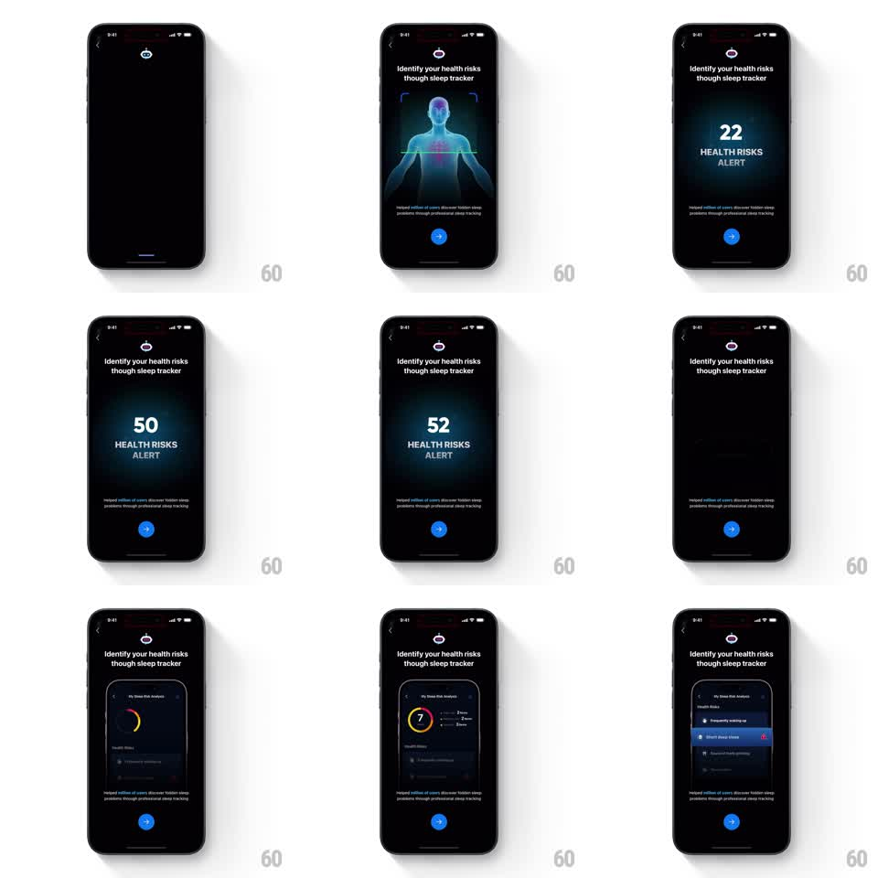

Media
Frame-by-frame

Rebuild this animation 1:1: ShutEye's health-risk reveal - a holographic body scan sweeps a line down a wireframe figure, a risk counter ticks up to 52, and a risk-analysis dashboard card slides in with its rings and alert rows.

Rebuild this animation 1:1: ShutEye's health-risk reveal - a holographic body scan sweeps a line down a wireframe figure, a risk counter ticks up to 52, and a risk-analysis dashboard card slides in with its rings and alert rows. ## Integration Integration: stack-agnostic spec - springs given as stiffness/damping, timed motions as duration + curve; map every value to your framework and animation library of choice. ## Scene A dark onboarding page: "Identify your health risks though sleep tracker". A holographic wireframe human figure in blue glow, with scan corner brackets. Then a big counter "52 HEALTH RISKS ALERT" over copy, then a "My Sleep Risk Analysis" dashboard card (risk gauge ring, Health Risks list with "Frequently waking up", "Short deep sleep" rows with alert icons). ## Motion spec Pattern: scan sweep to counter to dashboard, ~4s. - The hologram fades in (400ms) and a horizontal scan line sweeps down the figure (1s, ease-in-out), the body's glow intensifying where the line passes; scan brackets hold at the corners. - The figure crossfades to the counter view: the number ticks rapidly up from 0 to 52 (900ms, ease-out deceleration), "HEALTH RISKS ALERT" beneath it. - The dashboard card rises from the bottom (spring stiffness 280 damping 24): the gauge ring sweeps to its value (600ms), then the risk rows stagger in (100ms apart, 250ms fade-rise), alert badges popping on their rows. ## Calibration - The counter's tick is fast but readable - digits rolling, not flickering. - The dashboard is a product preview inside the onboarding page, framed like a card, not a full screen. ## Reduced motion Scan holds static; counter sets; dashboard fades in complete. ## Don't miss - The hologram has a red glow point at the chest - the risk focal point. - The alert badges on dashboard rows are red - the only warm color in the scene.